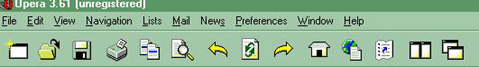
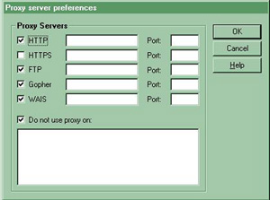
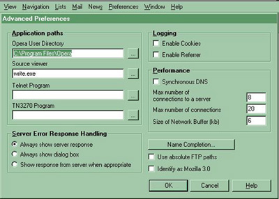

<
the Opera browser FAQ
It has the usual tool bar, with the file, edit, view,
but besides that it has the
Navigation(for reload, stop, home), the
List (for Bookmarks), Preferences and Windows
Just like Netscape and IE, you can also access news and your e-mail with it too. The mail & news option is inside the Preferences.
1. Let's look at some of the options more closely:
To put in a link you must either go to the little image of Earth with a list next to it, or to Navigation+Open Remote and put your URL there. To use a proxy
in go to Preferences, then Proxy Servers
to stop cookies, you go to Preferences, then Advanced Preferences and click OFF the cookies abutton.
Preferences has the Multimedia option
It is a bit slower than Netscape in fetching links, but faster than IE.
Windows, Special Window contains the global.dat which hols all the visited links, the cache(ll the images)
3. to clean Opera you need to wipe the following files:
C:\Program Files\Opera\global.dat which contains the visited links(URLs), C:\Program Files\Opera\cookies.dat, C:\Program Files\Opera\vlinks.dat(another visited links file)
4. A few noticeble quirks:
- the STOP button is on the bottom not on top, but there is one inside the Navigation,
- the clickable links are not underlined (?),
- the window showing the URLs is on the bottom instead of on top.
This is just the begining of the FAQ, I will write a lot more on Opera when i use it some more so please check this page for updates.